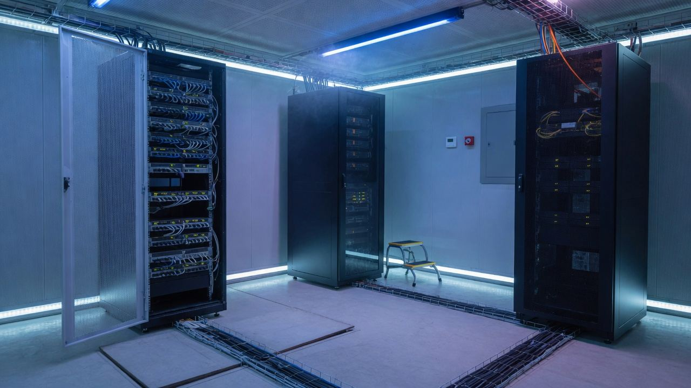
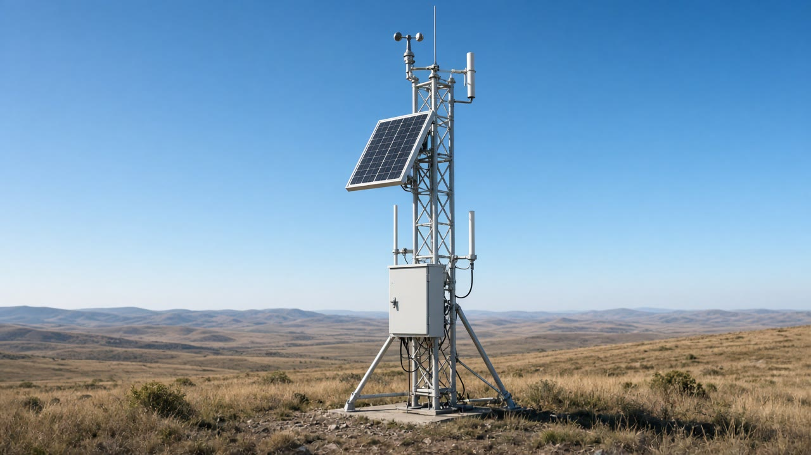
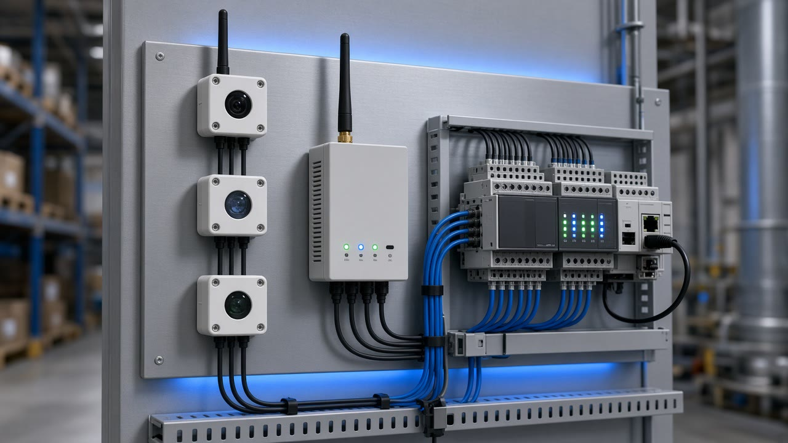
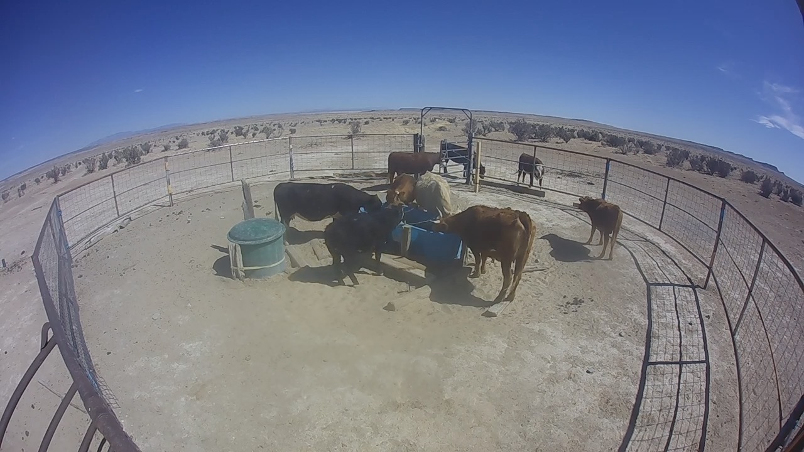
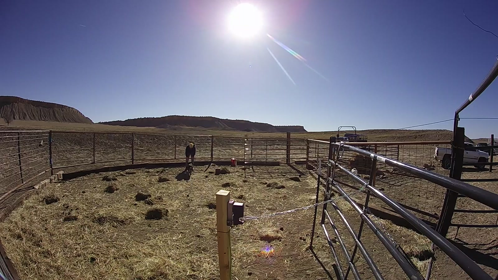
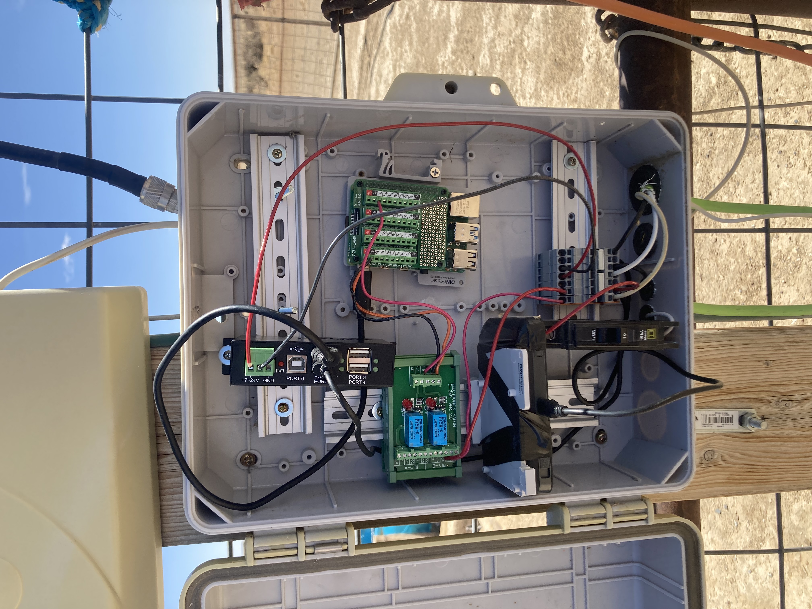

Managed today
AI-enable on our path
Your company workflows start using AI here. We operate the managed private path. Data stays on your path — not a claim that every store is air-gapped.
Adopt the network · put AI in the work
Your workflows start using AI — on a private path.
We put AI in the jobs you already run — ops, docs, cameras, handoffs. Then we stand up the private path they run on. On-prem or cloud. Control, data, machines, and data stores stay off the public internet.
Managed today
Your company workflows start using AI here. We operate the managed private path. Data stays on your path — not a claim that every store is air-gapped.
Your environment via Build
Same product on-prem, cloud, or hybrid — when you want those company workflows to run there.
Messy last‑mile — cell, Wi‑Fi, or Starlink — we operate the managed private path.
LOJO
Private Networks
Install. Tap Connect.
Control stays off the public internet.

Get AI-enabled
We start from the jobs you already run. Then we stand up the private path they run on — on-prem, cloud, or hybrid. Control, data, machines, and data stores stay off the public internet.
Ops, docs, cameras, and handoffs start using AI. Not a new platform to learn.
People ask the job they already have. AI reads the same site systems they trust.
Drawings, tickets, and site docs inform the work without leaving your path.
Vision flags what matters — on the same private path as control.
Work moves from site to site — still your process, now AI-enabled.
On-prem, cloud, or hybrid. Agents use site tools on your path — private MCP servers when you add them.
Jobs a buyer already has. We AI-enable them on your private path — we sell the path, not another agent platform.
The morning check starts with AI that already looked at the sites.
Operators ask what’s down — pad status, alarms, last-mile gear — without opening the plant network.
A new lead asks the same SOPs and drawings your company already trusts.
Knowledge stays on your path — not a public chatbot.

The night shift gets flagged instead of scrubbing every camera.
Object detection on remote video — cell, Wi‑Fi, or Starlink — on the same path as control.
The next site is already in the ticket before someone remembers to call.
One agent flags, another tickets, another notifies — across plants and pads.

AI uses the same machines and stores your operators already use.
Controllers, historians, and file stores stay off the public internet.
A contractor works from a copilot — not a copy of the plant network.
Design systems and plant controls stay on a managed private path.
Oil & gas, IoT, remote sensing, businesses, and ag — same way to AI-enable company workflows, not a ranch-first story.
Get plant ops using AI — copilots and contractor access without opening the plant network.
Crews get answers from site systems, knowledge on wellsite docs, and vision alerts. Control, data, machines, and data stores stay off the public internet.
Controllers join a named path so edge work can start using AI.
IoT and controls reach you after Connect — with remote video and on-path vision / object detection when you need it. Control, data, machines, and data stores stay off the public internet.
Sensors and camera alerts start working for the crew — no public ports.
Field gear on messy last‑mile — cell, Wi‑Fi, or Starlink — we operate the path so control, data, machines, and data stores stay off the public internet.
Get the plant AI-enabled — knowledge and copilots on plant systems, including aerospace.
Contractors and sites reach design systems, plant controls, and site AI over a managed private path. Control, data, machines, and data stores stay off the public internet.

Same private-path pattern at remote livestock sites.
Monitoring, remote open/close, and site view on a private path — a cattle-trap field example in New Mexico. Optional proof, not the product. Control, data, machines, and data stores stay off the public internet.
Also for: construction & temporary sites · mining / quarry · water & irrigation · trucking & yards · campuses · disaster / remote camps
Capability proof · optional field example
One field example: remote trap sites operators can monitor and control from a phone over cell or Starlink — without putting control, data, machines, or data stores on the public internet. Same path for businesses, oil & gas, and field IoT that want those jobs using AI. Cattle and Montano stay proof — not the hero.
IoT and controls reach you after Connect — with remote video and on-path vision / object detection when you need it. Managed path today, or Build when you want those workflows in your own environment.

Deployment · two modes
Same product idea either way — get the company AI-enabled on a private path. Control, data, machines, and data stores stay off the public internet. Two places those company workflows can run.
Managed today
You Connect your sites. We operate the managed private path so people, agents, IoT, and site data reach each other without putting control, data, machines, or data stores on the public internet. Managed is a private path — not a claim that every store is air-gapped.
Your environment via Build
When you want those workflows inside your own cloud or on your premises, we scope and deliver that under a Build engagement — design, deploy, hand off, or keep running.
Get the company AI-enabled on the managed path today; when those workflows need to run in your own cloud or on-site, that’s a Build engagement.
What you get
How it works
Tell us which company workflows should start using AI.
Connect, Operate, or Build — we scope the jobs and stand up the path.
Your team installs a simple app and taps Connect.
You work. We operate the private path — optional private AI when you add it.

Also offered · remote livestock
Need remote trap control, monitoring, and a private path built and run for you? We deliver that under Build — same private-path pattern as the rest of LOJO, sized for ranch and remote livestock sites. Optional proof, not the hero product.
Plans
Three ways to buy the path so company workflows can use AI. Optional private AI and multi-agent are add-ons, not a buried substitute for plans.
| Plan | What | Price |
|---|---|---|
| Connect | Managed private path for sites that can’t put control, data, machines, and data stores on the public internet | from $150/site/mo |
| Operate | Connect + we watch edge gear, remote sensing, and uptime. Browser control after Connect — with remote video and optional private AI / on-path vision when you need them. | from $400/site/mo |
| Build | Systems-as-a-service — place those workflows in your cloud or on-site; we design/deploy/hand off or keep running. Cattle-trap and similar remote systems available under the same plan when you want them. | scoped quote (typical pilot build from ~$5k) |
| Add-ons | Optional private AI, MCP servers, and private multi-agent on your path — scoped on Connect, Operate, or Build. Not a public chatbot. | scoped add to any plan |
Write team@lojo.engineering — which plan, sites, and which company workflows should start using AI.
Pick a plan. Review how it deploys. Write team@lojo.engineering — which plan, sites, and when you want to start.
Talk AI plans